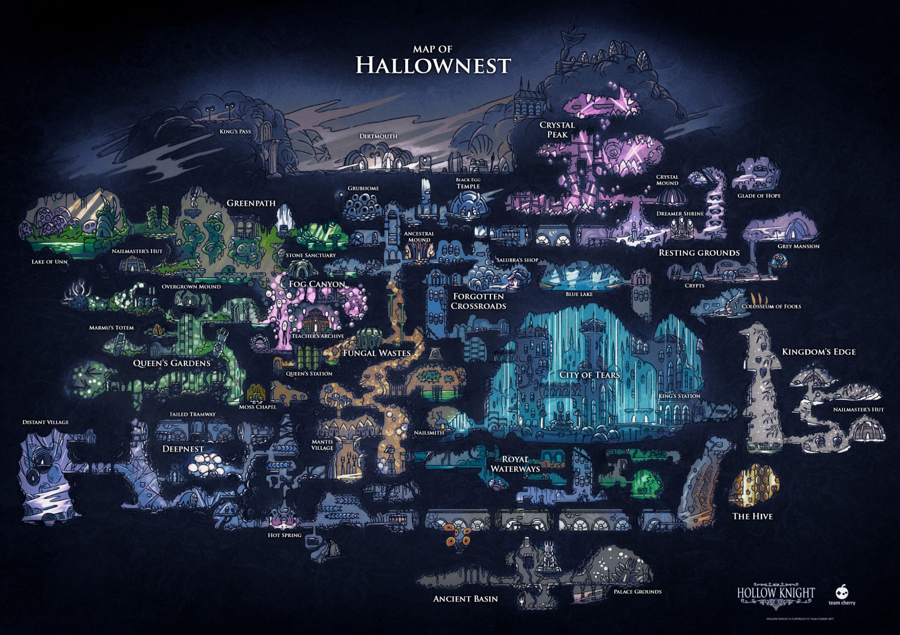
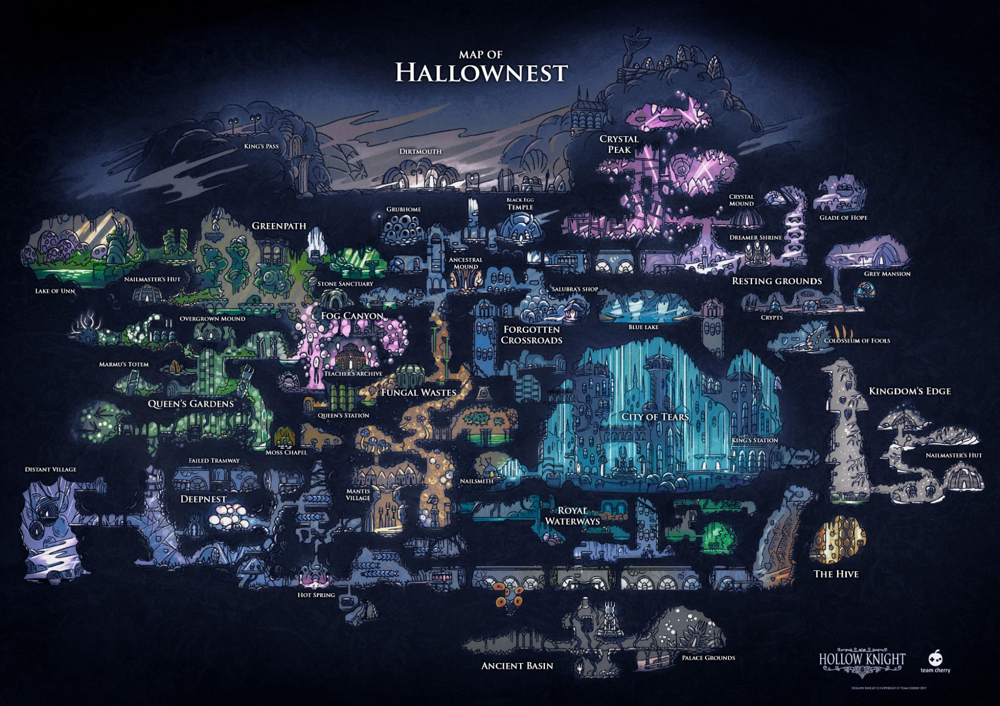

類銀河戰士惡魔城名稱由來
類銀河戰士惡魔城(英文:Metroidvania game)，是動作冒險遊戲的一個分支，指玩法類似於銀河戰士系列和部分惡魔城系列的遊戲。
該分類的名字是將兩個系列的名字混合而成。遊戲關鍵字為「探索」。此外還有「銀河戰士風格遊戲」、「類銀河戰士遊戲」等強調與銀河戰士系列相似性的叫法。


類銀河戰士惡魔城(英文:Metroidvania game)，是動作冒險遊戲的一個分支，指玩法類似於銀河戰士系列和部分惡魔城系列的遊戲。
該分類的名字是將兩個系列的名字混合而成。遊戲關鍵字為「探索」。此外還有「銀河戰士風格遊戲」、「類銀河戰士遊戲」等強調與銀河戰士系列相似性的叫法。
